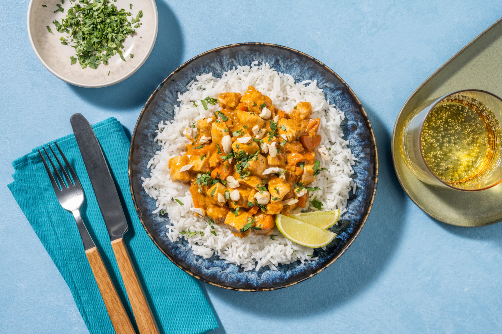

Le Carnet
Recette
Curry de Poulet
au
Lait de Coco
& Cajou
4 personnes
45 min
Ingrédients
Viande
Filets de poulet
600 g
Sauce & légumes
Oignons
2
Gousses d'ail
2
Carottes
4
Gingembre frais
10 g
Lait de coco
400 ml
Concentré de tomates
20 g
Garam masala
8 g
Beurre
10 g
Huile de tournesol
15 g
Sucre
4 g
Garniture
Noix de cajou
40 g
Citron vert
½
Coriandre fraîche
q.s.
Préparation
Mise en place —
Ciseler l'ail et l'oignon. Râper le gingembre et les carottes. Couper le poulet en petits dés.
1
Faire chauffer beurre et huile à feu moyen-vif. Ajouter le garam masala et torréfier.
1 min
2
Ajouter le sucre, le gingembre râpé, l'ail et l'oignon ciselés. Faire sauter.
2–3 min
3
Ajouter le concentré de tomates, les carottes et le lait de coco. Baisser le feu et laisser mijoter à couvert.
7–8 min
4
Ajouter le poulet et cuire à couvert.
6–8 min
5
Goûter, ajuster l'assaisonnement et l'épaisseur. Dresser avec cajou, coriandre fraîche et un filet de citron vert.
Servir avec du riz basmati